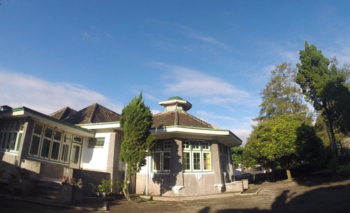
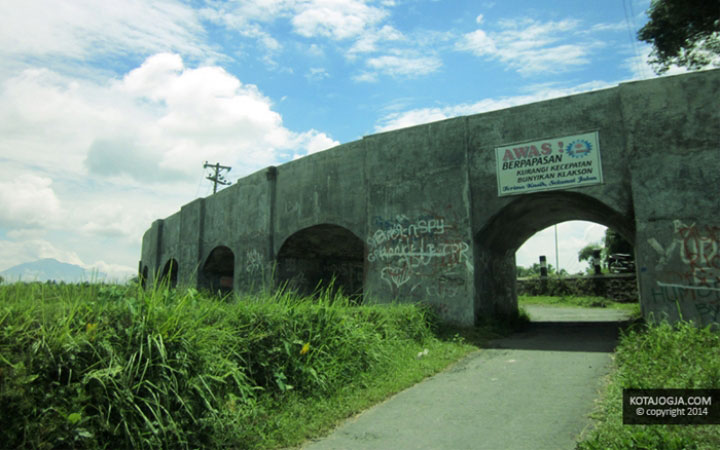
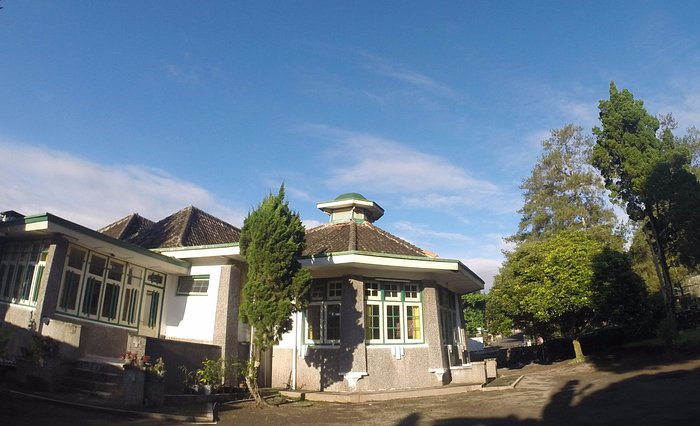
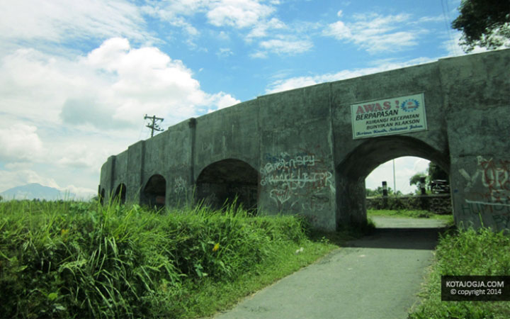

Tentang
Sistem Informasi Pelestarian dan Eksplorasi Cagar Budaya Sleman atau SIPENCA merupakan sebuah aplikasi manajemen cagar budaya yang berbasis Web GIS. SIPENCA difungsikan sebagai salah satu media pelestarian dan pengelolaan cagar budaya di Kabupaten Sleman. perluas penjelasan istem Informasi Pelestarian dan Eksplorasi Cagar Budaya Sleman atau SIPENCA merupakan sebuah aplikasi manajemen cagar budaya yang berbasis Web GIS. SIPENCA difungsikan sebagai pelestarian dan pengelolaan cagar budaya di Kabupaten Sleman.
SIPENCA mendukung upaya pelestarian warisan budaya serta memberikan kontribusi dalam pengelolaan informasi serta pendidikan dan penelitian terkait cagar budaya di wilayah Kabupaten Sleman.
Sistem Informasi Pelestarian dan Eksplorasi Cagar Budaya Sleman (SIPENCA) adalah suatu inovasi teknologi yang berfungsi sebagai platform manajemen cagar budaya dengan basis Web GIS di Kabupaten Sleman. Dengan memanfaatkan sistem informasi geografis berbasis web, SIPENCA menjadi alat yang strategis dalam upaya pelestarian dan pengelolaan kekayaan budaya di wilayah tersebut. Tujuan utama SIPENCA adalah menyediakan sarana yang efektif untuk dokumentasi, pemantauan, dan eksplorasi cagar budaya, serta memudahkan akses informasi terkait bagi berbagai pihak. Aplikasi ini tidak hanya memberikan informasi secara statis mengenai cagar budaya, tetapi juga memberikan kemampuan interaktif melalui teknologi GIS. Pengguna dapat dengan mudah menjelajahi peta interaktif untuk menemukan lokasi cagar budaya, mengetahui karakteristik fisik, sejarah, dan status pelestarian.
SIPENCA: Sistem Informasi Pelestarian dan Eksplorasi Cagar Budaya Sleman
 


